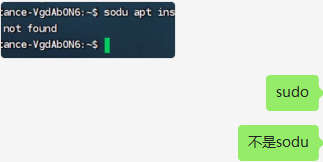

MOSS来了也答不上来
原文：https://mp.weixin.qq.com/s?__biz=MzAwMzIzOTk5OQ==&mid=2247496808&idx=1&sn=d1c83e7410b68c0ba461abaee737c228&chksm=9b3c8d38ac4b042e492075b58440bf1f545b6a52ef251ee4041be666f5296b97a9be215ec4b0#rd 合集：漫谈胡侃
 众所周知，我特意拉了交流群给大家互相答疑(永久免费的千人生信、科研交流群)，但是总有同学添加我以私戳我问问题。我也反复提醒过大家如何有效提问(给生信入门初学者的小贴士)，倒不是我这人没奉献精神，大家知道我平时很热衷于替大家排忧解难，只是我天天收到如下的提问，着实是有心答疑却无处下手。就像下面这个情况，光说包装不上，不告诉我什么包，也不告诉我具体的报错信息，MOSS来了也爱莫能助哇 。
众所周知，我特意拉了交流群给大家互相答疑(永久免费的千人生信、科研交流群)，但是总有同学添加我以私戳我问问题。我也反复提醒过大家如何有效提问(给生信入门初学者的小贴士)，倒不是我这人没奉献精神，大家知道我平时很热衷于替大家排忧解难，只是我天天收到如下的提问，着实是有心答疑却无处下手。就像下面这个情况，光说包装不上，不告诉我什么包，也不告诉我具体的报错信息，MOSS来了也爱莫能助哇 。
亦或是有些同学命令都没敲对，也找我来debug。我若一个个都答了吧，没这功夫，真正需要帮助的同学就被晾着了；我若是不答，有些人就嚷嚷起来了：XX博主给的代码全是BUG。我真的比窦娥还冤 ，且不说我辛辛苦苦分享代码、教程还得给大家免费答疑，我分享的代码大都是成功运行后编译出来的而非复制粘贴，怎么会出现bug呢？于情于理都怪不上我啊。

另外还有一种情况我也经常遇到，明明我精心地做好了debug方案更新出来，依旧很多同学看不到，有时当天更新得debug也会有人在群里问。我反思了一下，这是我的问题，有些推送我应该反复更新，让大家都看得到。

如何联系我们
 公众号后台消息更新不及时，超过48h便不许回复读者消息，这里给大家留一下领取资料及免费服务器的微信号 ，方便各位随时交流、提建议（科研任务繁重，回复不及时请见谅）。此外呼声一直很高的交流群 也建好了，欢迎大家入群讨论：永久免费的千人生信、科研交流群
公众号后台消息更新不及时，超过48h便不许回复读者消息，这里给大家留一下领取资料及免费服务器的微信号 ，方便各位随时交流、提建议（科研任务繁重，回复不及时请见谅）。此外呼声一直很高的交流群 也建好了，欢迎大家入群讨论：永久免费的千人生信、科研交流群
大家可以阅读完这几篇之后添加给生信入门初学者的小贴士 如何搜索公众号过往发布内容

 您点的每个赞和在看，我都认真当成了喜欢
您点的每个赞和在看，我都认真当成了喜欢